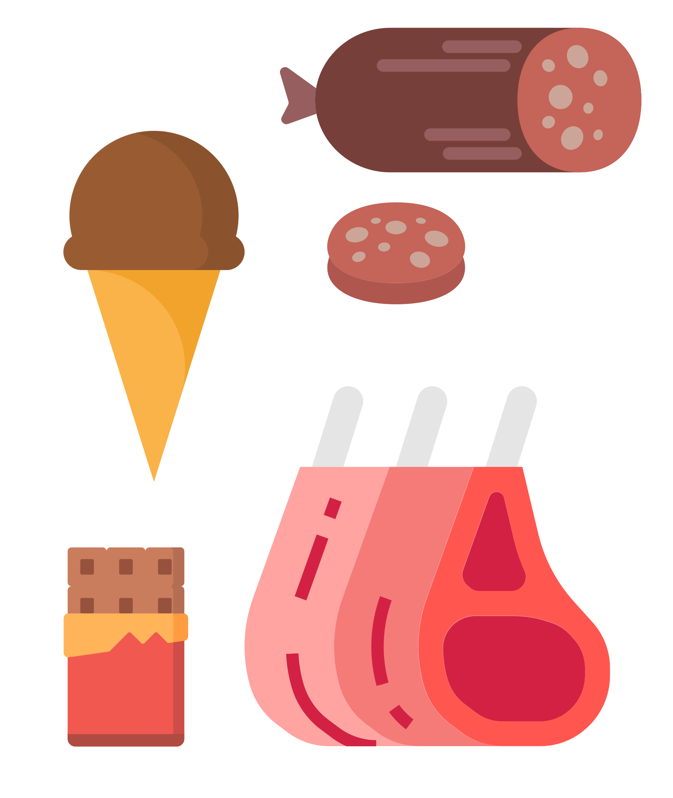
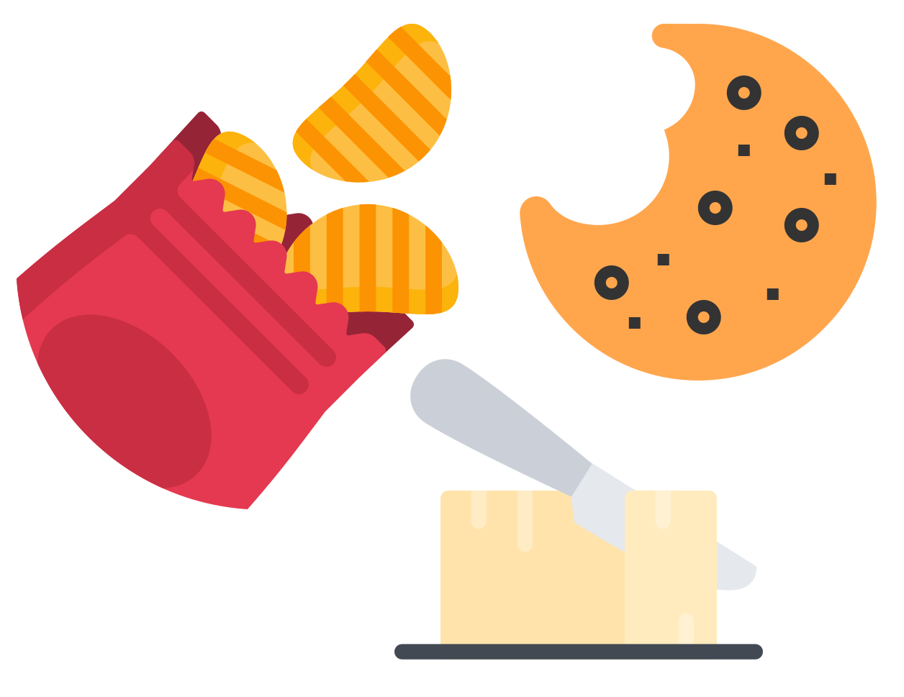
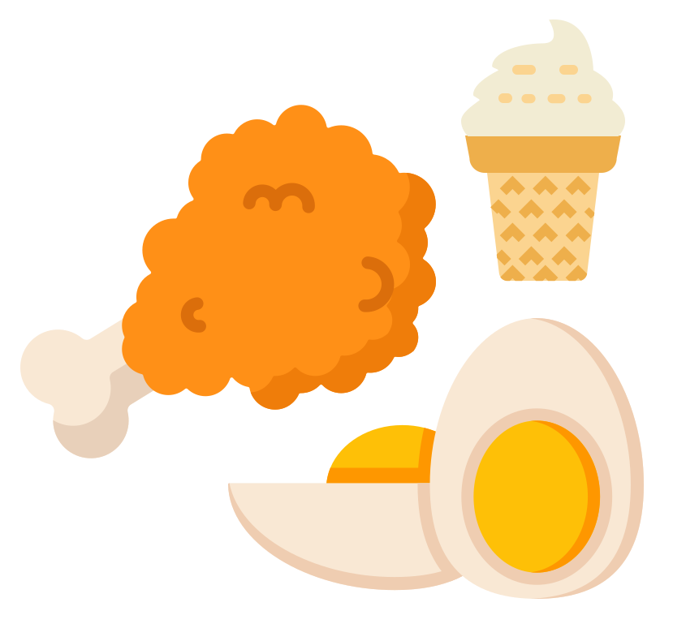

البقاء بعيدا
هناك ثلاثة أنواع من الدهون غير الصحية يمكن أن تضر قلبك هي: الدهون المشبعة والدهون المتحولة، وكذلك الأطعمة التي تحتوي على نسبة عالية من الكوليسترول. ضع في اعتبارك أن تناول أي من هذه الأطعمة من حين لآخر وبكميات صغيرة لن يُسبب ضررًا فوريًا لقلبك! لكن لا تجعل هذه الأطعمة جزءًا من حميتك المعتادة!
تشمل الأطعمة الغنية بالدهون المشبعة:

- جلد الدجاج وجلد الديك الرومي
- الشوكولاتة
- جوز الهند وزيت جوز الهند
- الصلصة المصنوعة من قطرات اللحم الدهنية
- منتجات الألبان عالية الدسم مثل الحليب كامل الدسم أو حليب 2٪، القشدة، الآيس كريم، الجبن كامل الدسم،
- اللحوم الغنية بالدهون مثل اللحم البقري المفروم والهوت دوج والسجق واللحم المقدد ولحم الرِّيَش، شحم الخنزير
- زيت النخيل وزيت نواة النخيل
- والصلصة المصنوعة من الزبدة أو القشدة
تشمل الأطعمة الغنية بالدهون المتحولة:

الأطعمة المُصنّعة من الزيوت المهدرجة أو الزيوت المهدرجة جزئيا، مثل
- البسكويت
- رقائق
- البطاطس
- والكعك
- والسمن النباتي
تشمل الأطعمة التي تحتوي على نسبة عالية من الكوليسترول:

- جلد الدجاج وجلد الديك الرومي
- صفار البيض
- منتجات الألبان عالية الدسم
- اللحوم الغنية بالدهون، الكبدة واللحوم العضوية الأخرى